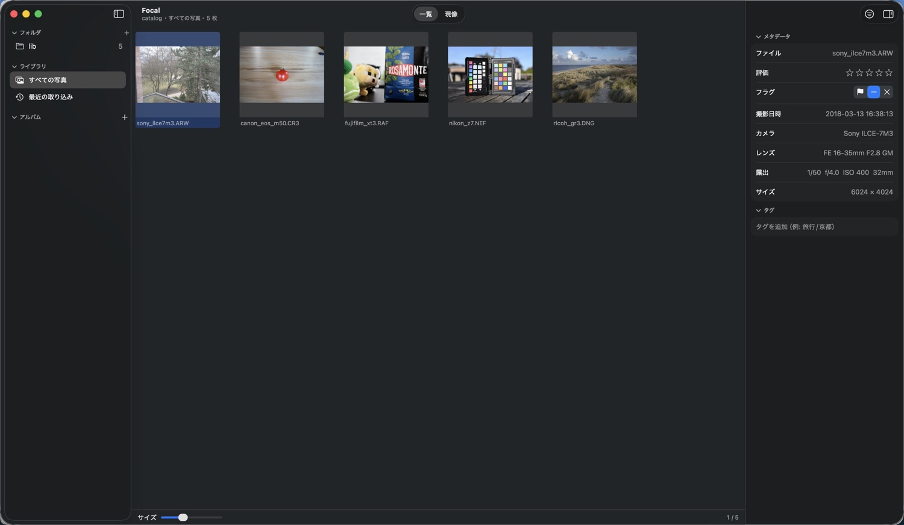
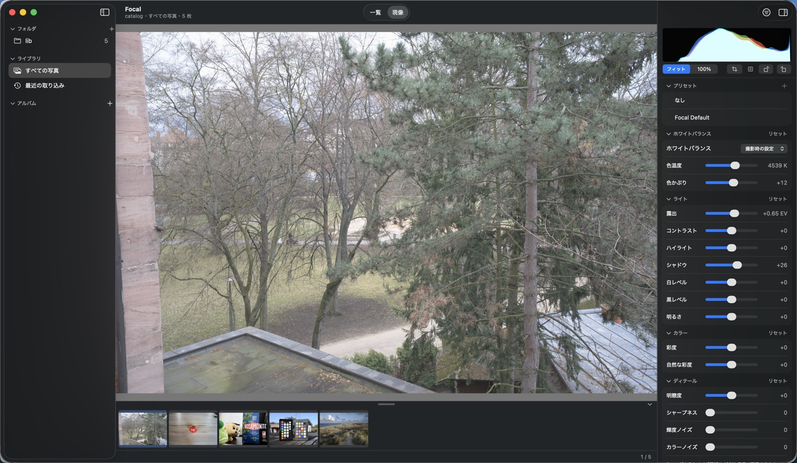

Focal
軽量でシンプルな macOS 用の RAW 写真管理・現像アプリ。
管理と現像を、1 つのアプリで。
macOS 14（Sonoma）以降 ・ Apple シリコン（arm64）


特長
写真を元の場所に置いたまま、軽く、すばやく扱えることを大切にしています。
元のファイルに書き込まない
元の RAW ファイルには一切書き込みません。現像の内容・★・タグはカタログ（SQLite）に保存します。
コピーしない参照方式
登録したフォルダの写真はコピーせず、そのまま参照します。外付けドライブや NAS の接続・取り外しにも追従します。
SD カードから取り込み
日付フォルダ（年 / 日付）へコピーします。コピーの検証、取り込み済みのスキップ、空き容量の確認つき。
非破壊の現像
取り消し・やり直しができ、調整はいつでも戻せます。表示は Metal で GPU が描くので、スライダーに素早く追従します。
現像プリセット
調整だけを保存して、取り込み時や一覧から、複数の写真にまとめて重ねられます。
カタログを守る
終了時の自動バックアップ。そのまま開けるカタログとして保存するので、戻すのも「開く」だけです。
できること
| 分類 | 機能 |
|---|---|
| ライブラリ | フォルダの登録と再スキャン、外付けドライブ・NAS の追従とオフライン表示、グリッド表示、★0〜5、ピック / リジェクト、階層タグ、アルバム（フォルダで入れ子）、スマートアルバム、絞り込み（★・フラグ・タグ・撮影日） |
| 取り込み | SD カードなどから 年 / 日付 のフォルダへコピー（検証・取り込み済みのスキップ・空き容量の確認）。現像プリセットを重ねて取り込めます |
| 現像 | 露出、コントラスト、ホワイトバランス（撮影時の設定 / カスタム）、ハイライト、シャドウ、白レベル、黒レベル、明るさ、彩度、自然な彩度、明瞭度、シャープネス、ノイズ低減（輝度・カラー）。プリセットの保存と適用 |
| ジオメトリ | 切り取り（縦横比の固定）、90° 回転、傾き補正（±45°）、水平線ツール |
| 表示 | フィット表示、100% 表示、ヒストグラム、フィルムストリップ。ライト / ダーク（既定はダーク） |
| RAW 以外の写真 | JPEG・TIFF・PNG（macOS では HEIF も）を管理。RAW と同じ名前の JPEG は、その RAW と同じ 1 枚として扱います（現像は RAW だけ） |
| 書き出し | sRGB の JPEG、16 ビットの TIFF（ICC プロファイル付き）、長辺の指定、複数枚の一括書き出し。撮影日時などの情報も書き込みます |
| 削除 | ⌥⌃⇧ Delete だけで、確認のうえディスクから削除（ローカルはゴミ箱、NAS は完全削除） |
| カタログ | 複数のカタログの切り替え、終了時の自動バックアップ、カタログ情報の表示と最適化 |
対応する RAW の形式は LibRaw によります（CR3・NEF・ARW・RAF・DNG で確認しています）。日本語・英語の表示に対応しています。
はじめる
ダウンロードした Focal 〈版〉.dmg を開き、Focal を「アプリケーション」へドラッグします。起動したら、カタログを作って、写真のフォルダを追加するだけです。くわしくは 使い方ガイド を見てください。